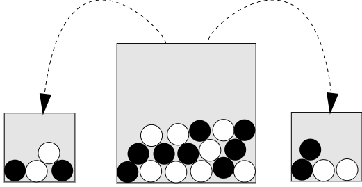
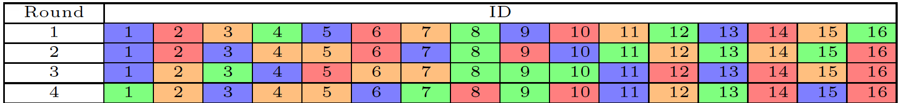

Experimental Economics: Data Workflow
Lecture 1: Method
March 21, 2023
Making Inferences
Causal Inference

The snooty sunflower believes that it can control the movement of the sun
Knowledge progresses by finding causes of phenomena
→ ?
→ ?
Scientific Research
- A description of Theories, Phenomena, and Data (Guala, 2005)
- Theories explain Phenomena
- Phenomena organize data that are messy, suggestive and idiosyncratic
- Data do not need a theoretical explanation, while phenomena do
- Distinction between data and phenomena: two stages of scientific research
- Phase 1: data are organized to identify phenomena
- Phase 2: causes of a phenomena are organized into theories
Perfectly Controlled Experimental Design (PCED)
- A Perfectly Controlled Experimental Design (PCED) represents in an abstract fashion the best way to test causal relations (Guala et al. 2005)
- A PCED is built around comparison and controlled variation
- Comparison → groups that have been exposed to different conditions are juxtaposed
- Controlled variation → all factors that are not intentionally manipulated should be kept constant across groups (uniformity)
Comparison (Guala et al. 2005)
- Post-test
- The (causal) effect is given by \(Y_{G_1}-Y_{G_2}\)
- Pre-test/post-test
- The (causal) effect is given by \((O_{G_2}-O_{G_1})-(O_{G_4}-O_{G_3})\) (diff in diff)
- The Pre-test/post-test allows to control for the impact of measurement
Controlled Variation
- How to obtain a controlled variation?
- Matching
- Units that are identical are assigned to groups in different conditions
- Consider a response variable \(Y\)
- \(Y_t(u)\) is the value of the response that would be observed if the unit were exposed to \(t\)
- \(Y_t(u)-Y_c(u)\) is the causal effect of \(t\) (relative to \(c\)) on \(u\)
- Causal inference refers to the appraisal of \(Y_t(u)-Y_c(u)\)
- Units that are identical are assigned to groups in different conditions
- Matching
- Fundamental Problem of Causal Inference
- it is impossible to observe the value of \(Y_t(u)\) and \(Y_c(u)\) on the same unit and, therefore, it is impossible to observe the effect of \(t\) on \(u\)
Controlled Variation (ii)
- How to obtain a controlled variation?
- Randomization
- The random assignment of units to groups in different conditions makes the groups identical in expected terms

- The random assignment of units to groups in different conditions makes the groups identical in expected terms
- Randomization
A General Identification Framework
- We follow here the notation of Czibor, Jimenez-Gomez, and List (2019) based on the Neyman-Rubin framework (see Holland 1986)
- Individual \(i\) can decide to take part in an experiment and is assigned to a given treatment
- Once in the treatment an outcome of interest is observed
- Example:
- John decides to take part in an experimental study about the impact of diets on BMI
- John is assigned to a low-carb diet
- After a year, the BMI of John is measured
A General Identification Framework (ii)
- Stage of an experiment
- \(p_i\) captures participation decision: \(p_i=1\) if \(i\) chooses to take part in the experiment (diet program)
- \(z_i\) is the assignment to a treatment: \(z_i=1\) if \(i\) is assigned to a treatment (low-carb diet)
- \(d_i\) is the treatment status: \(d_i=1\) if \(i\) actually receives the treatment (follows the low-carb diet)
- \(y_i\) is the outcome of interest: \(y_{i1}\) when the treatment status is \(d_i=1\) and \(y_{i0}\) when \(d_i=0\) (BMI)
- \(y_{i1}-y_{i0}\) is the best measure of the impact of the treatment (causality)
- However, it cannot be observed (Fundamental problem of causal inference)
Average Treatment Effect (ATE)
- \[ATE=\tau^*=E[y_{i1}-y_{i0}]\]
- ATE is not directly observable
- What can be estimate is \(\tau\)
- \(\tau=E[y_{i1}|d_i=1]-E[y_{i0}|d_i=0]\)
- Difference between the average effect of treatment on those treated and the baseline average effect of those not treated
- \(\tau=E[y_{i1}|d_i=1]-E[y_{i0}|d_i=0]\)
- When the following conditions are met → \(\tau=\tau^*\)
- \(d\) is randomly assigned
- Participants do not opt our of the treatment
- When individuals opt out, the Intention To Treat effect (ITT) can be estimated
- How the intervention converts into outcomes
- A Local Average Treatment Effect (LATE) can be estimated for those that do not opt-out
- Outcomes of an individual do not affect outcomes of others (SUTVA)
- No spillovers in behavior between those treated and those not
Randomization
- When \(d\) is not randomly assigned, like in field happenstance data
- \(\tau=E[y_{i1}|d_i=1]-E[y_{i0}|d_i=0]= ...\)
- \(...=\underbrace{E[y_{i1}-y_{i0}|d_i=1]}_{\text{ATE on treated}}+\underbrace{E[y_{i0}|d_i=1]-E[y_{i0}|d_i=0]}_{\text{selection bias}}\)
- The selection bias is ruled out when the Conditional Independence Assumption (CIA) is met
- \(\{y_{i0}, y_{i1}\} \perp d_i|x_i\)
- The outcome in each state and the assignment to a treatment are independent, conditional upon observable covariates \(x\)
- \(E[y_{i1}|x_i,d=1]- E[y_{i0}|x_i,d_i=0]=E[y_{i1}-y_{i0}|x_i] \rightarrow \tau=\tau^*\)
- CIA is met under proper randomization
Random assignment: an example
- \(\tau=E[y_{i1}|d_i=1]-E[y_{i0}|d_i=0]= \underbrace{E[y_{i1}-y_{i0}|d_i=1]}_{\text{ATE on treated}}+\underbrace{E[y_{i0}|d_i=1]-E[y_{i0}|d_i=0]}_{\text{selection bias}}\)
- CASE 1: voluntary participation in the low-carb diet
- A subject decides voluntary to take part in the low-carb diet
- \(\underbrace{E[y_{i0}|d_i=1]-E[y_{i0}|d_i=0]}_{\text{selection bias}}\neq 0\) because those willing to take a low-carb diet are also more likely to do sport
- CASE 2: random assignment to the low-carb diet
- A subject i is randomly assigned to the low-carb
- \(\underbrace{E[y_{i0}|d_i=1]-E[y_{i0}|d_i=0]}_{\text{selection bias}}= 0\) because those in the low-card and those not in the low-carb do not differ, on average, in the likelihood of doing sport
A case study
Decision time and Cooperation
- Rand, Greene, and Nowak (2012) investigate the cognitive basis of cooperation relying on the dual-process framework
- Is Cooperation instinctive (Sys 1) or deliberate (Sys 2)?
- “are we intuitively self-interested, and is it only through reflection that we reject our selfish impulses and force ourselves to cooperate?”
- → Faster decisions are less cooperative
- “Or are we intuitively cooperative, with reflection upon the logic of self-interest causing us to rein in our cooperative urges and instead act selfishly?”
- → Faster decisions are more cooperative
Causal Evidence from A PGG
- 680 Subjects in a PGG on MTurk
- Controlled manipulation of time available to choose
- Time pressure: choose within 10 seconds
- Time delay: choose after 10 seconds
- Subjects under time pressure cooperate more
A large replications study
- The Perspectives on Psychological Science Registered Replication Report for Rand, Green, & Nowak (2012) (Bouwmeester et al. 2017) replicates the experiment by Rand, Greene, and Nowak (2012)
- The protocol is available at https://osf.io/scu2f/
- 21 laboratories contributed to the replication study
- 4-person PGG with time pressure
- 4-person PGG with time pressure
Local Average Treatment Effect (LATE)
- In Rand, Greene, and Nowak (2012), about 50% of participants responded on time in the time pressure condition
- A compliant-only approach to the analysis of data
- Only those who adhere to the experimental protocol are considered
- Those who do not answer within the time limit are disregarded
- However, a compliant-only approach may create a strong selection bias
- LATE \(\neq\) ATE
- Correlational studies show that slower participants are less cooperative
- Overestimation of cooperation in the time pressure condition because of self selection!
- A compliant-only approach to the analysis of data
Intention to Treat effect
- Bouwmeester et al. (2017) adopt instead a intention-to-treat approach
- Analysis of all participants, irrespective of their adherence to the instructions
- Preserves random assignment and avoids selection bias
- Potentially might underestimate the power of treatment
- Measure of returns of a policy
- Analysis of all participants, irrespective of their adherence to the instructions
Results
- When focusing on all participants, no significant differences between the time pressure and the time delay condition
- When the non-compliant are omitted, a significant effect is observed
- Intention-to-treat may underestimate the treatment effect
- Need for further studies reducing the non-compliance
- e.g., simpler choices
- Need for further studies reducing the non-compliance
Improve findings’ reliability
Inference Errors
- Failed replications highlight the issue of False Positives (type I error)
Source of Image: Effect Size FAQs by Paul Ellis
- The probability that a research finding is true depends on
- Prior probability of it being true (before the study)
- Statistical power of the study (\(\beta\))
- Level of statistical significance (\(\alpha\))
A conceptual framework
- Ioannidis (2005) provides us with a conceptual framework to assess the reliability of research findings
- \(R\) is the ratio of the number of true relationship to the number of no relationships among those tested in a field
- Odds of a true relationship
- The pre-study probability of a relationship being true is \(R/(1+R)\)
- where
- \(\beta\) is the type 2 error rate
- \(\alpha\) is the type 1 error rate
- \(c\) is the number of relationships tested.
Positive Predicted Probability
- The post-study probability that a study is true is the Positive Predictive Probability (PPV)
- PPV=\((1-\beta) R/(R-\beta R+ \alpha)\)
- A research finding is thus more likely true than false if \(PPV>1/2 \Rightarrow (1-\beta)R>\alpha\)
- Higher for smaller \(\beta\) (more power)
- Higher for smaller \(\alpha\) (stronger significance)
- Higher for higher \(R\) (higher priors of true relationships)
- Bias in research
- Design
- Data analysis
- Presentation
Ioannidis (2005)’s Corollaries
- The smaller the studies conducted in a scientific field, the less likely the research findings are to be true.
- The smaller the effect sizes in a scientific field, the less likely the research findings are to be true.
- The greater the number and the lesser the selection of tested relationships in a scientific field, the less likely the research findings are to be true.
- The greater the flexibility in designs, definitions, outcomes, and analytical modes in a scientific field, the less likely the research findings are to be true.
- The greater the financial and other interests and prejudices in a scientific field, the less likely the research findings are to be true.
- The hotter a scientific field (with more scientific teams involved), the less likely the research findings are to be true.
Pre-test power analysis
- The size \(N\) of the sample is an important determinant of the statistical power of the test
- Reduction of the type 2 error rate
- Consider a simple treatment (2)/control (1) design and to use a t-test to test the null hypothesis that the two groups do not differ, on average
- The effect size: \(d=\frac{|\mu_1-\mu_2|}{\sigma}\), where \(\mu_1\) and \(\mu_2\) are average responses for group 1 and 2, respectively; \(\sigma\) is the common error variance
- According to Cohen (2013): 0.2, 0.5, and 0.8 are small, medium, and large effect sizes, respectively.
- The effect size: \(d=\frac{|\mu_1-\mu_2|}{\sigma}\), where \(\mu_1\) and \(\mu_2\) are average responses for group 1 and 2, respectively; \(\sigma\) is the common error variance
Pre-test power analysis (ii)
- Conventionally, we assume a power of .8 (\(\beta=.2\)) and a significance level of .05 (\(\alpha=.05\))
- The N required may be very large for small effect sizes
- The G*Power software provides an easy interface to perform power tests
- The main limitation is that you need to assume an effect size ex-ante
- Similar studies
- Meta-analysis
Preregistration of research protocol
- A potential way to improve results’ reliability is pre-registration of experimental protocols (Abrams, Libgober, and List 2020)
- ” Preregistration of an analysis plan is committing to analytic steps without advance knowledge of the research outcomes. “(Nosek et al. 2018)
- file drawer problem
- Research may be biased towards “positive” results relative to “null” results
- Easier to publish results containing a simple narrative
- Testing of data and hypotheses may be “adjusted” ex-post to fit the narrative
- p-hacking and result manipulation
- biases in data analysis
- Details of the experimental protocol, the hypotheses and their statistical analysis is posted in advanced on trusted platforms
- Registration platforms
How preregistration might improve replicability
- In the Hypothetico-Deductive (HD) model an hypothesis is tested against data
- Ideally, hypotheses are formulated in advance and data collected afterwards
- Hypotheses in the HD model are predictions \(H \rightarrow e\)
- Predictions are different than postdictions
- In postdiction data are known and the hypotheses are fit to the data \(H \leftarrow e\)
- Predictions are different than postdictions
- Preregistration commits the researcher to the HD model
- Abrams, Libgober, and List (2020) show that 90% of RCT in selected journal do not pre-register
- Most pre-registration are not detailed enough
Experimental Economics
Wordcloud
The frequency of words is gathered from the titles of papers contained in the NEP report on Experimental Economics edited by Daniel Houser.
Why Running Economic Experiments?
- Roth and Kagel (1995) identifies 3 main motives for experiments in Economics
- Speaking to Theorists
- Testing predictions originating from formal theories
- The organization of empirical regularities into formal theories
- Searching for Facts (Meaning)
- The study of effects that are not (yet) part of a well-structured theory
- The accumulation of facts that may lead to the creation of new theories (``Searching for Meanings’’)
- Whispering to the Ears of Princes
- The formulation of advices for policy makers
- Speaking to Theorists
Methodological Foundations
- Hertwig and Ortmann (2001) identify 4 essential methodological aspect of experiments in economics
- Script Enactment
- Comprehensive instructions reduce risk of ``demand effects’’ (Zizzo 2010)
- Important for replicability
- Comprehensive instructions reduce risk of ``demand effects’’ (Zizzo 2010)
- Repeated trials
- Allows for learning and, potentially, equilibrium convergence
- Performance-based monetary payments
- Proper monetary payments allow to control for the disturbance due to cognitive effort
- Truthful information
- Deception may induce suspicion among participants and generate uncontrolled reputation spillovers
- Script Enactment
Validity of Experimental Findings
- Methodological aspect define the validity of the experiment
- The validity of an experiment can be assessed along two dimensions
- Internal validity
- The extent to which an experiment allows to draw inferences about the behavior in the experiment
- External validity
- The extent to which an experiment allows to draw inferences about behavior outside the experiment
- Internal validity
Internal Validity
“Just as we need to use clean test tubes in chemistry experiments, so we need to get the laboratory conditions right when testing economic theory” (Binmore 1999)
- To ensure internal validity a proper experimental setting should be implemented
- Examples of dirty tubes
- Bad incentive schemes
- Individuals self-select into treatments
- Deceitful instructions
- Experimenter demand effects (EDE)
- Reputation (supergames)
External validity
- 3 dimensions of artificiality that may impact on external validity of experiments (Bardsley et al. 2010)
- Artificiality of isolation
- The experimental setting may omit relevant features of the external environment
- Findings in the lab may not survive when transferred to the complexity of the real-world
- The experimental setting may omit relevant features of the external environment
- Artificiality of omission and contamination
- The laboratory environment may bias results (e.g., bad incentives)
- A lack of internal validity produces a lack of external validity
- The laboratory environment may bias results (e.g., bad incentives)
- Artificiality of alteration
- The laboratory alters natural phenomena
- Individuals attach a different meaning to a market in the laboratory and to a real stock market → it is impossible to study stock markets in the laboratory
- The laboratory alters natural phenomena
- Artificiality of isolation
- Artificiality of alteration is the most challenging
Building blocks of experiments
Building blocks
- Repetition
- One shot vs. repeated trials
- Stationary repetition, conditional task, …
- Payment scheme
- Random lottery incentive, cumulative payment …
- Choice Task (stage game)
- Roles, action space, …
- Matching
- Partner matching, absolute stranger, perfect stranger, …
Repetitions: One shot vs. repeated
One-shot: the stage game is repeated only \(1 \times\)
Round
ID
1
101
102
103
104
Repeated trials: the stage game is repeated \(N>1 \times\)
Round
ID
1
101
102
103
104
2
101
102
103
104
3
101
102
103
104
…
101
102
103
104
Repetitions can be
- Stationary: same task over distinct rounds
- Dynamic: different tasks over distinct rounds
Payment scheme: Incentive-compatibility
- Motivation of participants is controlled via (monetary) rewards → Induced Value Theory (Smith 1976)
- Three qualifications of the postulate
- Subjective costs (values) may be non-negligible and interfere with monetary reward
- e.g., cognitive effort may overcome the monetary incentives
- A game value may be attached to experimental (nominal) outcomes (e.g., points or tokens)
- As long as the value function is monotone it does not interfere with induced valuation (reinforcement)
- Individuals may be concerned with others’ utility and thus not be independent in their evaluation
- Increasing one’s own payoff not necessarily increases utility (e.g., equity concerns)
- Subjective costs (values) may be non-negligible and interfere with monetary reward
Payment schemes
- Different payment schemes could be adopted when repeated choices are collected
- Cumulative payment
- All choices are rewarded
- Random Lottery Incentive (RLI)
- One choice is randomly chosen for payment
- Chosen round is communicated to participants only at the end of the experiment
- One choice is randomly chosen for payment
- Cumulative payment
- The RLI mechanism generates incentive compatible choices as long as participants are EUT
- It avoids potential confounds due to wealth effects or edging wrt cumulative payment
Choice Task: Choice Environment
- Aspects of the choice task that need to be carefully defined
- Roles in the interaction should be assigned to participants
- Usually roles are randomly defined by randomly assign participants to computer terminals
- Action space
- The action space affects the nature of the outcome variable
- Dichotomous data, Count data, Continuous data, String data …
- The action space affects the nature of the outcome variable
- Payoff rule
- Must produce incentive compatible choices
- Important to check that participants understood it
- When tokens are employed a conversion rate should be specified
- Roles in the interaction should be assigned to participants
Matching: Data Independence
- Statistical tests should be run on independent observations
- The outcome of one observational unit should not be affected by the outcome of another observational unit
- When choices of one participant interact with choices of another participant their choices are no more independent
- The contagion analogy
- This is true even when the interaction is indirect but mediated by a bridging individual
Matching: An Example
| Round | ID | |||
|---|---|---|---|---|
| 1 | 1 | 2 | 3 | 4 |
| 2 | 1 | 2 | 3 | 4 |
- 4 players interact in groups of 2 over two rounds
- Blue and Red
- Thus, the following connections are created
ID 1 2 3 4 1 1 2 1 1 3 1 0 1 4 0 1 1 1
- 3 and 2 are not directly connected, but indirectly (via Pl. 4)
- Only one independent observation in the experiment!
- Average choice of the four players
- Only one independent observation in the experiment!
Matching: Protocol
- 16 Participants
- ID: 1, 2, … 16
- 4 groups
- Blue, Red, Orange, Green
- 4 rounds
- Round 1, Round 2, Round 3, Round 4
- Each group has 4 participants
Matching: Partner Matching
- 4 participants interact in the 4 rounds
- Players 1-4 are always in the same (blue) group
- Reputation building
Matching: Random Partner Matching
- Each group is made of 4 participants and participants in a group interact together
- At each repetition the groups are formed randomly

- e.g., player 1 is in group Blue in rounds 1–3 and in group Green in round 4
- Two players can be matched together in different rounds
- e.g., 1 and 9 are in the same group in rounds 1 and 4
- PRO: simple to implement and to explain; control on reputation concerns
- CONS: the number of independent observations is endogenous and shrinks with repetitions
Matching: Random Partner Matching with Matching Groups
- 4 groups: Blue, Red, Orange, Green
- The groups are matched into two subgroups
- [Blue, Red] and [Orange, Green]
- Each group is made of 4 participants and participants in a group interact together
- In each repetition the groups are formed randomly, within the subgroups
- Participants in the two subgroups never meet → segregation
- A way to increase the number of independent observations with random matching
Matching: Absolute Stranger Matching
- Two participants never meet twice
- PRO: Perfect control about reputation concerns
- CONS: Observations are not independent
- Everyone meets everyone
Wrapping up
Planning a lab experiment
- Design
- The building blocks should meet research hypotheses
- Repetitions, Payment scheme, Choice task, Matching
- Useful to discuss the design in internal seminars
- Preregister your hypotheses and methodology
- The building blocks should meet research hypotheses
- Recruiting of participants
- Usually participants are registered in a database (e.g., ORSEE)
- Participation to the experiment is solicited via emails or posters
- Usually participants are registered in a database (e.g., ORSEE)
- Conductance of the experiment
- Participants are gathered in a room (laboratory) and asked to make their choices
- Generally, managed by computers
- Participants are gathered in a room (laboratory) and asked to make their choices
- Data Analysis
- Data are collected, organized and analyzed
- Focus on hypotheses testing
- Data are collected, organized and analyzed
- Data Sharing
- Share your data with others
- e.g., Mendeley Data
- Share your data with others
References
M. Ploner - Experimental Economics : Data Workflow